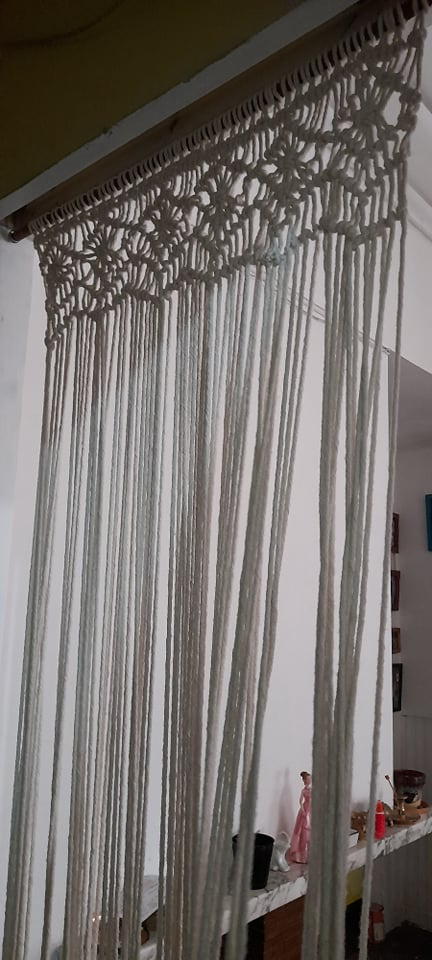
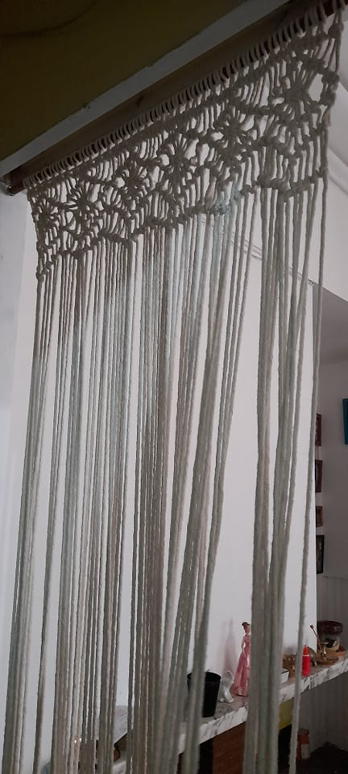

¡Hola! somos DreamCrabtcher, un emprendimiento que comenzo en el 2019 hasta hoy. Hacemos accesorios en macrame y otros materiales. Trabajamos con amor y dedicación en todos nuestros productos Podras encontrar todos tipo de articulos de decoración e inclusos personalizados. Esperamos que te gusten nuestros productos
 
